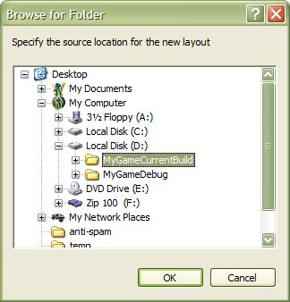
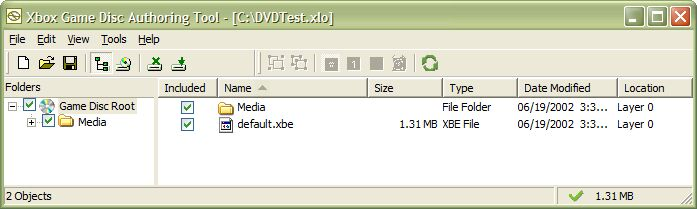
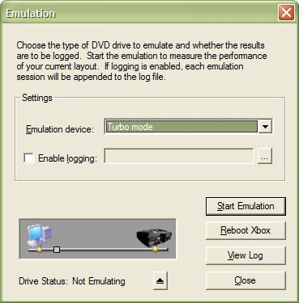

A Quick Walk-Through of the Xbox Game Disc Emulation Software
This walk-through will acquaint you with the Xbox Game Disc Emulation software and
will point out some potential obstacles that might slow you down. To complete this
walk-through, you must have installed the software. If you have not, please see
How to Install the Xbox
Game Disc Emulation Software for the First Time.
Before you use the Xbox Game Disc Emulation software, you should disable all
anti-virus software you have running on your development system. Real-time
anti-virus software significantly slows the Xbox Game Disc Emulation software. It is
unlikely you will get accurate results if anti-virus software is active on your
development system.
Note Assume for the following instructions that you installed the XDK in its default path location. If you installed it elsewhere, you will need to modify the paths given here.
- Connect the SCSI cable between the Xbox Development Kit (the console) and the
XDK-DVD PCI card in the development PC.
- Create a directory, DVDTest, on the hard disk of the development system.
If you installed the hard disk that comes with the XDK, you can use that
disk to avoid taking up space on your development disk with emulation
images. The Xbox Game Disc Emulation system can use any hard disk to
produce accurate game disc emulation performance. The hard disk provided
with the XDK is not required, but it comes in handy if you wish to keep your
development and emulation data separate.
- Build the Dolphin sample. You can find this sample in
C:\Program Files\Microsoft Xbox SDK\Samples\Xbox\Graphics\Dolphin.
- After the build, you should have a file called Dolphin.xbe. Copy this file
and media folder to the DVDTest directory.
- Rename the Dolphin.xbe file within the DVDTest directory to default.xbe.
(When a title is run from media, its file name must be default.xbe.)
- Start the Xbox Game Disc Authoring Tool (XbGameDisc). (You use this tool to build and map out the emulated Xbox
game disc. You can find it in C:\Program Files\Microsoft Xbox DVD\xbox\bin\xbgamedisc.exe.
It has a shortcut installed on the Start menu called Microsoft
Xbox SDK -> Game Disc Tools -> Xbox Game Disc Authoring Tool.)
- Once the Xbox Game Disc Authoring Tool starts, it should ask
you to either start a new session or open an existing session. Select Start
a new authoring session and click OK.
- The Browse for Folder dialog box appears. Browse and select the DVDTest
directory you created earlier, and then click OK.

- You should see a screen similar to the one below. To proceed, click the
Save button on the tool bar, select Save from the File menu, or
press Ctrl+S. You will be prompted to save your layout image. A Save
XLO File dialog box will appear and prompt you to enter a name. In the File
name text field, type "DVDTest.xlo" and click Save.

- Click the Emulator button , afetr which the Emulation dialog box will appear:

- Click Start Emulation.
- The Drive Status message in the Emulation dialog box will cycle through the following messages:
- Opening tray...
- Closing tray...
- Detecting media...
- Media detected
When the status message says "Media detected," the emulator is ready. If you
click Reboot Xbox, the development console reboots and loads the Dolphin sample from the disc image you created earlier.
- Once you have started emulation, it is important that you don't open or
close the disc tray on the console until after you have stopped the
emulation. You can stop emulation either by clicking Stop Emulation
or by clicking Close.